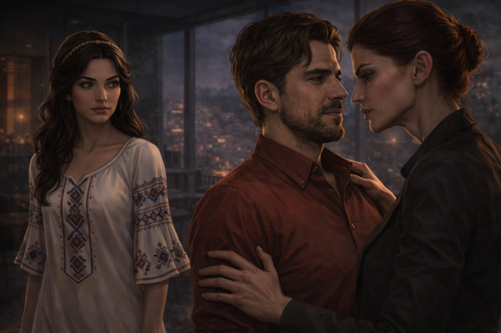

Поглавље 17: Тајна руских агената
Página individual del capítulo con lectura y ejercicios.

Луис и Наташа седе у стану, покушавајући да схвате ко су те рускиње и шта заправо траже. Наташа је узнемирена, а Луис покушава да смисли план.
"Ко су те жене, Луис?" пита Наташа. "Шта њих занима?"
Луис се замисли на тренутак, а затим каже: "Мислим да су то агенти руских тајних служби. Русија је увек била заинтересована за магију и древне легенде. Вероватно су сазнали за Час дивљака и желе да искористе његову моћ."
Наташа га гледа пуним очима. "Али зашто? Шта Русија жели са тим?"
Луис објашњава: "Русија увек тражи начине да ојача свој утицај у свету. Ако успеју да контролишу Час дивљака, могли би да искористе хаос у Београду да преузму контролу над градом, или чак над целим регионом. То би им дало огромну моћ."
Наташа уздахне. "То је страшно. Али зашто баш Београд?"
Луис одговара: "Београд је увек био кључна тачка на Балкану. Ако контролишеш Београд, контролишеш и много тога другог. Русија вероватно жели да искористи хаос да осигура своје интересе."
Наташа се замисли. "Али шта са Змајем Огњеним Вуком? Може ли то чудовиште зауставити Час дивљака?"
Луис кима. "Према легенди, да. Али морамо пронаћи камења и сазнати где их ставити. Рускиње вероватно траже исту ствар."
Наташа је одлучна. "Морамо их зауставити. Не могу дозволити да униште мој град."
Луис je гледа пуним поштовања. "Ти си невероватна, Наташа. Али морамо бити пажљиви. Рускиње су опасне."
Наташа му прилази и узима га за руку. "Заједно смо јачи. Нећу дозволити да те изгубим."
Луис je љуби у чело. "Нећеш. Ја сам ту са тобом."
Они настављају да разговарају, покушавајући да смисле план. Знају да су у опасности, али и да имају моћ древних легенда на својој страни.